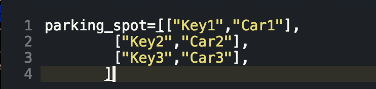
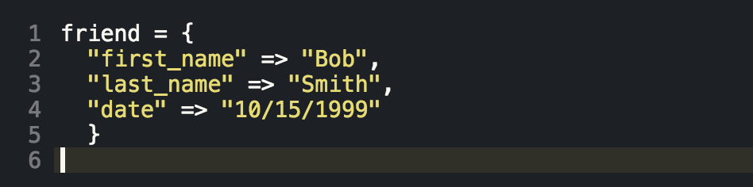
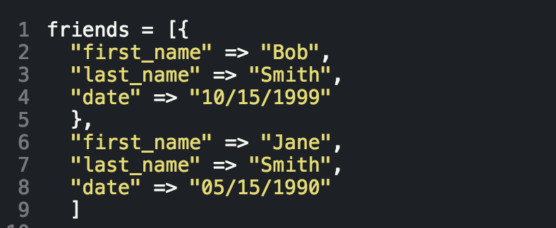

Hashes and arrays are crucial data types to understand if you are going to venture into the wild west of programming. Both of these data structures have been designed to resemble the way the human mind stores information. Lets bring in a real life scenario here, you are someone who works at a garage, and you have to keep all the keys for the car locked up. How do you go about organizing this information? Well, there are probably many ways you could store it. I would opt for one of those hook systems, where you can hang each of the keys. Can you figure out what kind of data type this closely resembles? If you guessed an array. I would agree with you. Heres why I would use a an array for this. You are getting ready for the evening rush hour to come around. You have to get the cars ready so they can get out of the lot in the order they are needed. So what do you do? You queue the cars up in the order which they will be picked up so they are ready when needed. This is what it might look like in Ruby.

Now lets move onto Hashes. Hashes are what we call key value pairs. Hashes are a valuable resource when it comes to having an unique key. For example, you would like to store some data about your friends so that you can call them on their birthday. Lets say you want to store their first name and last name, the date of their birthday. Here is what each friend hash would look like in Ruby.
As you may have noticed that hash has the data for one friend. You ask yourself what you do in the unlikely event that you were to have more than one friend. This is where things get interesting. We would combine the two data types to create an array of hashes. This would look like the following in Ruby.For more info on hashes or arrays, go check out the Ruby Docs
 Andrew Blum
Andrew Blum